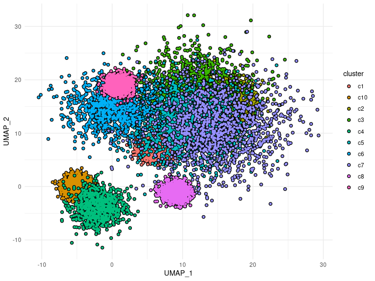
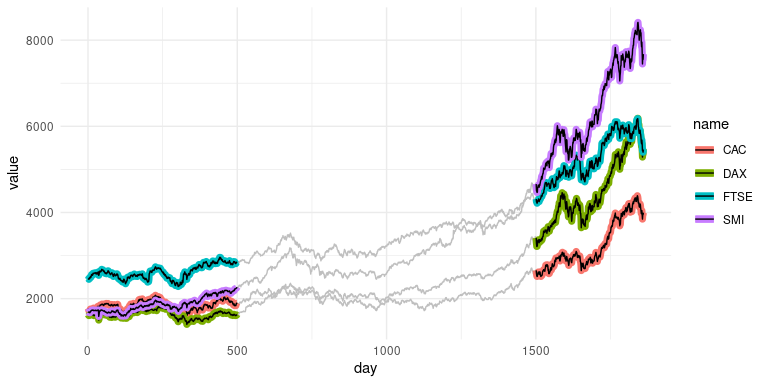

ggtrace provides ggplot2 geoms that allow groups of data points to be highlighted with an outline for emphasis.
Installation
You can install the development version of ggtrace from GitHub with:
# install.packages("devtools")
devtools::install_github("rnabioco/ggtrace")Basic Usage
geom_point_trace accepts graphical parameters normally passed to geom_point to control the appearance of data points and outlines. The arguments trace_position and background_color can be used to select specific sets of points to highlight. For more examples see the vignette.
library(ggplot2)
library(ggtrace)
ggplot(
clusters,
aes(UMAP_1, UMAP_2, color = cluster)
) +
theme_minimal() +
geom_point_trace(
size = 1,
fill = "white",
trace_position = signal < 0,
background_color = "grey85"
)
geom_line_trace accepts parameters normally passed to geom_line with the following exceptions: fill controls the inner line color, color controls the outline color, and stroke controls the outline width. Like geom_point_trace(), the arguments trace_position and background_color can be used to select specific data points to highlight. For more examples see the vignette.
ggplot(stocks, aes(day, value, color = name)) +
theme_minimal() +
geom_line_trace(
trace_position = day > 1500,
size = 0.5,
stroke = 0.5,
fill = "black",
background_color = "grey75"
)